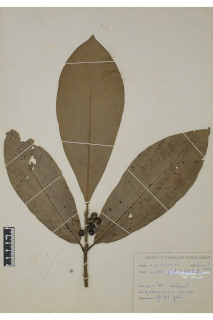
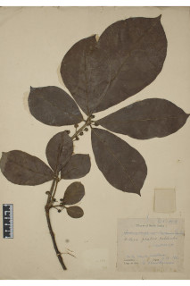
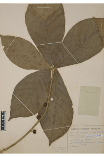
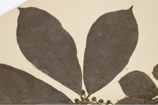

Images :






| Habit : | Trees up to 6 m tall. |
| Leaves : | Leaves simple , alternate , subverticillate ; petiole 1-2.5 cm long, subterete , densely tomentose ; lamina 9-34 x 6-13 cm, obovate , apex abruptly acuminate , base cuneate , margin entire , chartaceous , softly tomentose beneath, glabrous above except midrib ; midrib raised above; secondary_nerves 9-14 pairs; tertiary_nerves distantly percurrent . |
| Inflorescence / Flower : | Umbels solitary , 4-5 flowered with tomentose bracts ; perianth segments present. |
| Fruit and Seed : | Berry , globose , 1 cm across; fruiting_perianth tube non-accrescent ; seed 1. |